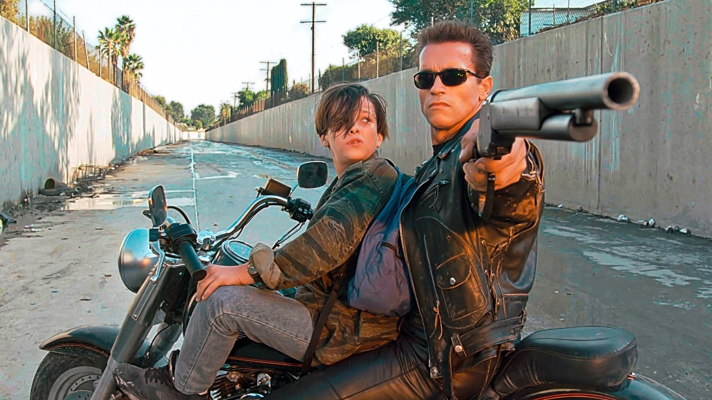

Lanzamiento
Estreno
Para promocionar la película, se lanzó un avance con varias de las escenas. Muchos fanáticos lo consideraron un destripe, ya que revela que el T-1000 es el villano y que el T-800 se une a Sarah para proteger a John Connor, así como que el primero es capaz de cambiar de forma. El filme recibió una calificación R —para mayores de 17 años a menos que estén acompañados por un adulto— por parte de la Motion Picture Association (MPA), debido a «su fuerte acción y violencia de ciencia ficción, y por el lenguaje».
Terminator 2 tuvo su preestreno en los cines Cineplex Odeon Century Plaza en Century City (Los Ángeles) el 1 de julio de 1991, con la presencia de personalidades como Nicolas Cage, Sylvester Stallone, Sharon Stone, Whoopi Goldberg, Michael Douglas y algunos de los actores que participaron en la película. Dos días después, el 3 de julio, se estrenó a nivel nacional en los cines estadounidenses. En España debutó el 5 de diciembre de 1991 en aproximadamente 150 cines. En otros países de habla hispana como México salió el 3 de julio, al mismo tiempo que en Estados Unidos, mientras que a Argentina llegó el 8 de agosto, a Colombia el 16 del mismo mes, y a Uruguay el 5 de septiembre. TriStar Pictures se encargó de la distribución en cines de la película en Estados Unidos. En 1991 se publicaron varias películas que compitieron con Terminator 2, como los filmes de suspense The Silence of the Lambs y Cape Fear, las comedias dramáticas Tomates verdes fritos y Night on Earth, los dramas Días salvajes y JFK, la comedia de terror The Addams Family, la película de animación La bella y la bestia, las de aventuras Robin Hood: príncipe de los ladrones y Hook, y la de acción Point Break. La siguiente es una lista de los estrenos de la película respecto al país.

Reestreno en 3D
El 29 de agosto de 2016 (una referencia al 29 de agosto de 1997, fecha en la que Skynet se vuelve consciente de sí mismo en las películas), se anunció que la película sería remasterizada digitalmente en 3D para conmemorar su vigésimo quinto aniversario, con una remasterización mundial. Se eligió el corte original de 137 minutos, ya que la edición extendida no es la preferida de James Cameron. Varias tomas de cámara de la secuencia de persecución inicial se modificaron digitalmente para corregir un error de continuidad menor que había preocupado a Cameron desde su lanzamiento en 1991. DMG Entertainment y StudioCanal trabajaron junto con Cameron para convertir la película con el uso de la tecnología StereoD. Al igual que en la versión 3D de Titanic (1997), Lightstorm Entertainment supervisó el trabajo en la conversión de Terminator 2, que empleó alrededor de 1800 artistas y un tiempo de ocho meses. Distrib Films US, una empresa que normalmente distribuye filmes extranjeros, se encargó la lanzar la restauración. El estudio lanzó la película exclusivamente durante una semana en los AMC Theatres de todo Estados Unidos. La versión 3D se inauguró el viernes 25 de agosto de 2017 en 371 salas de cine, con un total de ganancias de 552 773 USD en su primer fin de semana y un promedio de 1490 USD por pantalla.